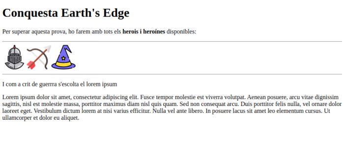
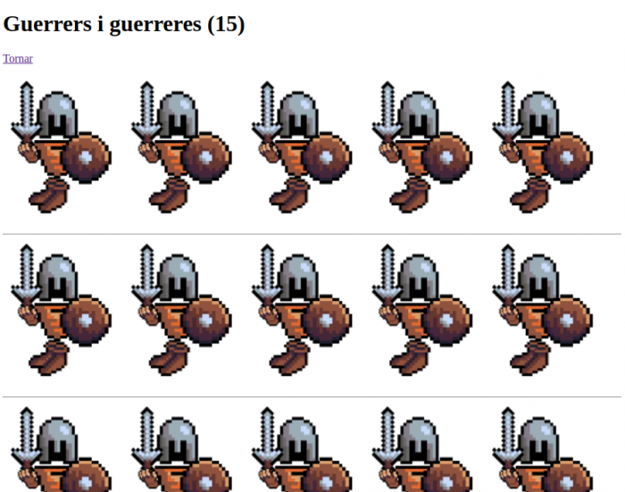
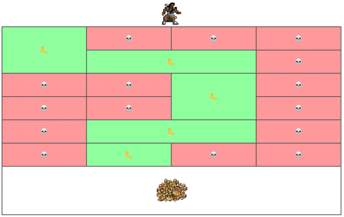
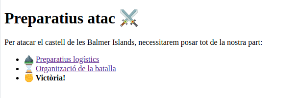
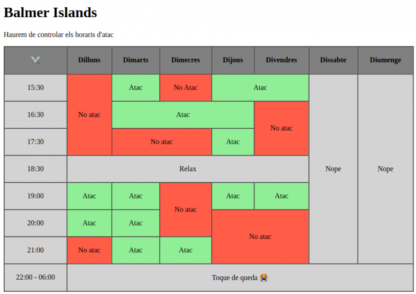
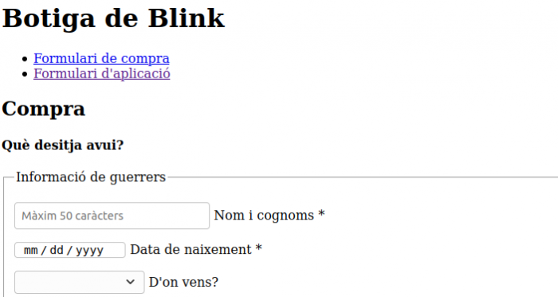
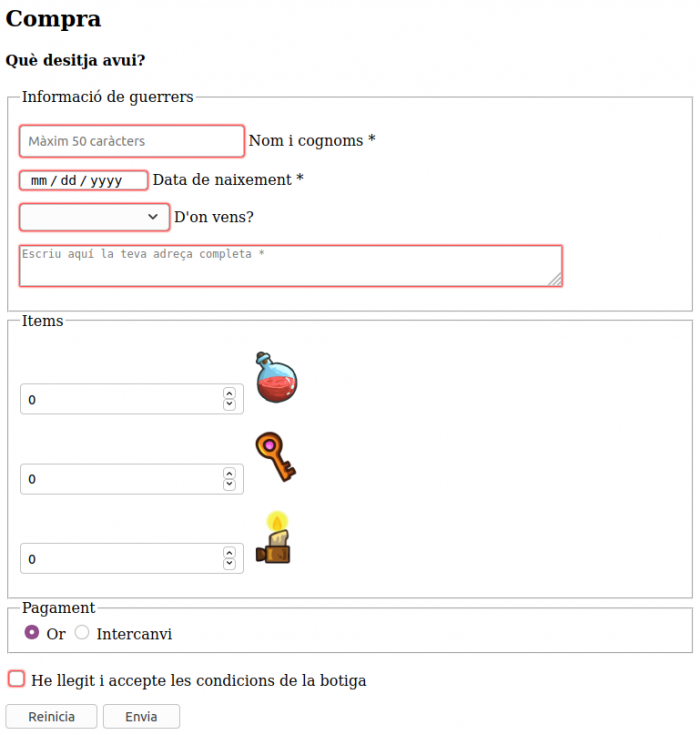
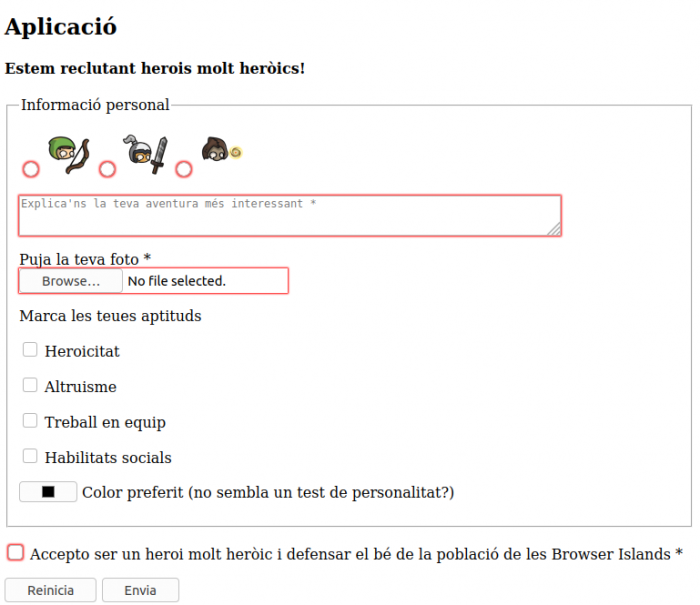
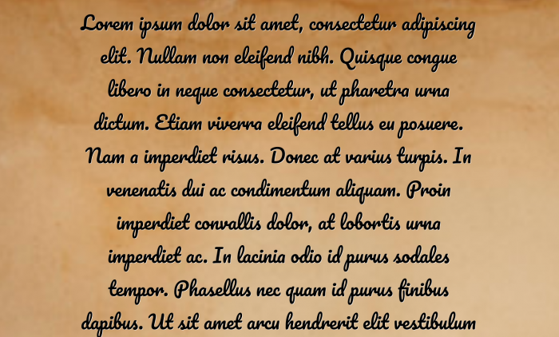
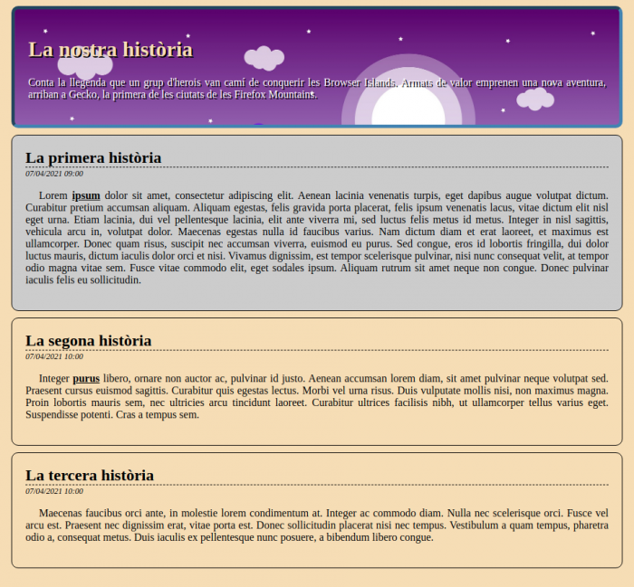

Històries
Comença l'aventura
Les Browser Islands són unes illes que es troben en un lloc remot del mar de Gomak. Les illes estan governades per un rei tirà que obliga els seus habitants a fer servir l'Internet Explorer versió 6. Canten els joglars que un grup d'herois ha arribat a l'illa amb nous coneixements dels estàndards i de nous navegadors. Podran conquerir els territoris i difondre la seva saviesa? Sols els temps ho dirà... El canvi comença! 🏹 ⚔️ 🧙♀️
Allen
Totes les tropes parteixen de la Noob Island per començar la conquesta de l'arxipèlag. Els espera un llarg camí amb molts reptes, però amb grans recompenses: coneixement i or. És tradició a les Browser Islands assignar als herois un objecte o animal que representa el seu nivell, què seran els herois en arribar? La primera ciutat estratègica és Allen, situada al sud de Earth's Edge. Allen és coneguda per ser una ciutat que no causarà grans problemes per conquerir, i per això serà una ciutat important a l'inici de la conquesta. Després d'unes setmanes de preparació, els herois ja es veuen amb forces de començar la conquesta. Els habitants d'Allen els esperen amb cert escepticisme, han escoltat meravelles dels nouvinguts però ... Seran de debò portadors de coneixements? El comitè de savis de la ciutat ha preparat una prova que els valents hauran de superar. Si superen la prova (s'ha d'encertar com a mínim 6 preguntes) la població s'unirà a l'exèrcit en la lluita contra el rei Explorer VI, en cas contrari esperaran altres herois que els ajudin en la conquesta. Ha arribat l'hora, el comitè de savis ens fa arribar la prova, endavant! P.D: Tots aquells que no identifiquin a quina casa pertanyen (és a dir, que tinguin una icona seleccionada) perdran 10 ❤️.
Edge's Gates
Els herois arriben a Earth's Edge, una ciutat que dubta de les nostres habilitats (qui s'han
cregut!?). Just en arribar, ens aturen el pas i ens proposen un repte: si som capaços de reunir i
d'organitzar 15 soldats de cada tipus (warriors, wizards i archers) ens obriran les portes i
s'uniran a la nostra lluita.
Creeu un fitxer anomenat index.html i tres fitxers anomenats warriors.html, wizards.html i
archers.html a dintre del directori "Earth's Edge".
index.html ha de contenir el següent:

A la imatge distingim els següents elements: títol, paràgrafs, línies horitzontals, imatges,
enllaços i una etiqueta in-line per dir que un text és important.
Cada imatge ha de ser un enllaç a la corresponent pàgina, per exemple, la de warriors.html seria:

On es poden veure les etiquetes: títol, enllaç per tornar a la pàgina principal, imatges amb un
ample d'un 19% de la pantalla i cada 5 imatges, una línia horitzontal.
Es valorarà la netedat del codi i, a més, donat que hi ha una persona amb deficiència visual al
poblat, serà obligatori afegir un correcte text alternatiu a totes les imatges.
si algú fa una ampliació digna de menció, tindrà un bonus de 20 i un regal de part de la població
d'Earth's Edge.
Explorer's path
Seguim amb el camí, ja hem superat la meitat de les ciutats d'Earth's Edge i arribem a la ciutat
d'Explorer's Path. Allà hi ha un bosc encantat, del que diuen les històries que hi ha un tresor
amagat, però que solament aquells amb una visió especial poden veure quin és el camí segur i no
caure en les trampes que porten a una mort segura. Els habitants de la ciutat confien amb nosaltres
per aconseguir el tresor, i ens prometen una bona recompensa si ho aconseguim.
Ostres ... Quina pressió! Ens apropem al bosc, solament aquells amb la visió adequada podran
detectar el camí segur:

Representa la teva visió del camí amb una taula, tenint en compte les següents consideracions:
El guerrer està al caption de la taula.
El peu i la calavera són emojis, els podeu copiar i enganxar d'aquí: 🦶 // 💀
El tresor està al tfoot de la taula.
Les dues imatges les teniu adjuntes aquí.
El primer en arribar al tresor, es quedarà amb un botí extra de 200 💰
Ànim heróis!
Balmer Islands
Creuem el canal per arribar a les Balmer Islands (hi ha una cosa estranya amb els noms, tindran
alguna cosa en comú?), la darrera de les ciutats importants de Earth's Edge. La població és gent
pacífica, però només confien en aquells que tinguen dots d'estrateg i ens posen a prova. Si preparem
un atac coordinat, ens donaran una recompensa molt generosa!
Necessitarem fer un pla i ensenyar-los-el, creem 3 fitxers html: index.html, prepare.html i
organise.html.
· index.html

Tindrem una pàgina que enllaçarà amb les altres dues. Decidiu les etiquetes necessàries, els
dibuixos són emoji: https://www.emojicopy.com/
· prepare.html

Teniu els fitxers multimèdia disponibles a la descàrrega. A cada etiqueta multimèdia marca les
propietats que té l'element.
· organise.html

Creant aquestes tres pàgines i exposant el nostre pla, aconseguirem la victòria!
Hakon
Ens adentrem en un nou territori, les Opera Lands, i a la primera ciutat ja ens volen fer una prova per veure els nostres coneixements ... Què pesats! S'uniran a la nostra lluita si encertem més de 8 preguntes. Pels 3 primers hi haurà 1 poció extra i 15 / 10 / 5 👊
Blink
I després de les festivitats de Häkon, arribem a Blink, Déu-n'hi-do quina pujada! 😫
No arriben molts herois per aquelles terres i de seguida som benvinguts. No obstant això, necessiten
ajuda i ens proposen un tracte: si els ajudem a fer un parell de formularis que necessiten, ens
donaran una recompensa i ens obriran la botiga per si necessitem comprar alguna cosa.
Ens demanen:
Els dos formularis han d'estar en la mateixa pàgina, els dos enllaços ens portaran a cadascun dels
formularis (al títol).

Un primer formulari permetrà a la botiga tenir un registre de compra de tots els visitants, no són
gaires, però la venedora té molta mala memòria ... En la següent imatge podeu veure el
formulari:

El nom i cognoms ha de tenir un màxim de 50 caràcters.
Els valors de la secció "D'on vens?" són: Earth's Edge, Opera Lands, Firefox Mountains i Chromium's
End.
En vermell estan marcats els camps requerits i, tot el text i imatge que acompanya qualsevol input,
és una etiqueta (label).
L'opció de pagament Or per defecte estarà marcada. Or i intercanvi no poden estar marcades a la
vegada.
El segon dels formularis és per a reclutar herois que lluiten per les Browser wars, i és de la
següent manera:

En vermell estan marcats els camps requerits i, tot el text i imatge que acompanya qualsevol input,
és una etiqueta (label).
En la primera opció, solament podrà estar marcada una opció.
I, com a ampliació, ens demanen millorar l'aparença del selector de formularis, potser amb un
imagemap quedaria més maco?
Endavant!
Presto
Sortegem les muntanyes que ens porten a Presto, la darrera ciutat de les Opera Lands.
Allà fa temps que es volen comunicar amb les poblacions de les Browser Islands, i necessiten ajuda.
Ens demanen que els mostrem com crear un pergamí en el que enviar missatges a la resta de
territoris.
Utilitzant CSS, creeu el següent fitxer:

Coses a tenir en compte:
El fons ha d'ocupar tota la pàgina.
El text ha de tenir com a mínim dos paràgrafs, aquests tindran una ombra de color blanc a 1px 1px.
La lletra estarà centrada i tindrà un marge superior de 20px i als laterals de 300px.
La lletra es diu "Pacifico" i és de Google Fonts i té una mida de 3em.
Segur que els podem ajudar, i si ho fem, tindrem la seva simpatia per continuar el nostre camí.
Llicència: “imagen: Freepik.com”. El fondo ha sido diseñada usando imágenes de Freepik.com
Gecko
Arribem a la primera de les ciutats de Firefox Mountains, Gecko. Hi ha pocs habitants i s'avorreixen
😢, estan desitjant escoltar les nostres històries! Però no les volen de qualsevol manera, les volen
amb floritures i ben maques.
Partint del fitxer html, decoreu la pàgina d'històries per presentar-la als seus habitants perquè
quedi de la següent manera:

Seguiu les següents instruccions:
S'ha d'enllaçar amb un fitxer css extern.
El header té una imatge de fons que ocuparà sempre tot l'ample mantenint la proporció d'aspecte de
la imatge. Tot el text que conté disposa d'una ombra que permeti llegir bé el text.
L'arrodoniment de les vores el fem amb la propietat border-radius, proveu-la!
Fixeu-vos en els espais i intenteu simular-los amb margin i padding. En alguns casos es pot
necessitar un margin negatiu per apropar elements.
La primera història té un color de fons diferent, utilitza els selectors per escollir el primer div
que sigui descendent de section.
Els paràgrafs de section tenen una petita indentació.
Tots els enllaços són de color negre i estan en negreta, no utilitzeu classes per canviar-ho.
Amb això segur ens guanyem la seva simpatia!
Respectant les instruccions anteriors, podeu fer una ampliació que tindrà una carta extra de
recompensa, si aquesta surt dolenta la desestimarem.